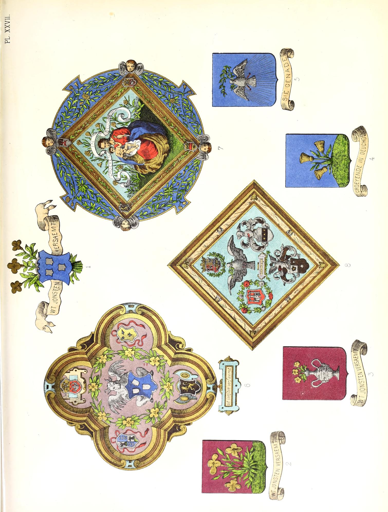

Wapenschild Sint-Lucasgilde Antwerpen
---------------------------------------------------------
In de facebook-group Heraldry of the World postte Ralf Hartemink de volgende afbeelding :

Dit is het wapenschild van de Sint-Lucasgilde van Antwerpen. De plaat XXVI verbeeldt het gildewapen getopt met eenen aanzienden en gevleugelden ossenkop van goud ; helmteeken : de Antwerpsche burcht van zilver ge-evend rechts van eene roos van keel en links
van eene roos van zilver, beide geknopt van goud. Het schild omringd met eene violierenkroon van goud en met verscheidene blazoenen van ambachten die van de gilde afhingen. Wij melden :
Als reactie op het posten van de eerste prent in de facebookgroup, postte David B. Appleton onderstaande prent met als commentaar:  De plaat XXVII stelt de kenteekens der drie rederijkkamers voor.
(plaat XXVI uit het boek Wapenboek der Antwerpse Gemeenteinstellingen, sedert de vroegste tijden tot op onze dagen van P. Génard 1883)
Centraal staat het eigenlijke wapenschild, azuur drie wapenschilden van zilver,
met als schildhouder een gevleugelde stier. Deze is het symbool voor de evangelist Lucas.
Sint-Lucas is ook al eeuwenlang de patroonheilige van de kunstschilders.
citaat uit boven genoemd boek (via archive.org) :
1: Het schild der goud- en zilversmeden : van azuur met drie koppen of kelken van goud.
2: De banier der glazenmakers : van azuur met verschillende werktuigen van het ambacht gebonden van keel en paalsgewijze geplaatst.
3: Het schild der boekdrukkers : van goud met den arend van sabel, gebekt en geklauwd van keel, houdende met den rechterklauw een zethaak, en met den linker eenen rol papier.
4: De banier der aardenpotbakkers : van keel met drie potten van zilver, de eerste eene pint, de tweede eene kruik, de derde eene kalbasflesch.
5: Het schild der borduurders : van keel met de borduurraam van goud, bekleed met een borduurwerk van zilver beladen met eene van binnen geziene rechter hand van keel omgeven van den hoed met zes rozen, drie van zilver en drie van keel, gebladerd van sinopel.
6: Het schild der vergulders : van keel met het kruiswerk eens zwaards van goud.
7: De banier der tapijtwerkers : van zilver met de van binnen geziene rechterhand van keel.
8: Het schild der knoopenmakers : van keel met de knoopenkaart van zilver beladen met negen knoopen van azuur.
9: Het schild der koffermakers : van keel met het koffer van goud belegd met zilver.
10: Het kenteeken der papiermakers : van keel met de van binnen geziene rechterhand van zilver ondersteund door een omgekeerd zilveren vuurstaal en overtopt met een klaverblad van hetzelfde metaal.
11: De banier der katoendrukkers : van keel met de van binnen geziene rechterhand van zilver.
A modern version done in grayscale at the Antwerp Archives.

Daarom stelde ik de vraag in de Facebook-groep Heraldiek en Genealogie. Win Deler dacht dat het misschien de wapens van gildemeesters (dekens) zouden kunnen zijn.
Bij nader onderzoek en op aangeven van Luc Duerloo zag ik inderdaad dat deze wapenschilden verwijzen naar belangrijke adelijke families uit het Antwerpse, die ook vaak burgemeesters van Antwerpen zijn geweest.
dexter:
1. Van de Werve
2. van Berchem
3. van Ranst?
4. Rockox
sinister:
1. van Ursel
2. Schetz ?
3. ?
4. van Stralen
de volgende plaat uit het boven vermelde boek geeft meer informatie:
De figuur 1 vertoont ons het blazoen der St.-Lucasgilde getopt met drie violieren en vergezeld van de kenspreuk : Wt jonsten versaemt.
De figuur 2 stelt het blazoen zelf der Violiere voor : van purper met de violier, gebladerd van sinopel en bloeiende van drie stuks van goud, ondersteund door eenen grond van sinopel.
De figuur 3 bevat een schild insgelijks van purper met den bloempot van zilver bevattende drie violierbloemen van goud, gebladerd van sinopel ; kenspreuk gelijk aan die der voorgaande banier.
De rederijkkamer de Goudbloem draagt van azuur met de goudbloem gebladerd van sinopel en bloeiende van drie stuks van goud, ondersteund door eenen grond van sinopel ; kenspreuk : Groeyende in deuchden
(fig- 4 )-
Het schild der rederijkkamer de Olijftak is van azuur met de duif of den H. Geest van zilver in eene glorie van goud en houdende in zijnen bek eenen olijftak van sinopel. Leus : Aensiet, sic of siet de genade (ecce gratia) (fig. 5).
De figuren 6 tot 8 vertoonen de groote blazoenen uitgevoerd ter gelegenheid van het Landjuweel van 1561. Deze laatsten zijn versierd met de wapens van
den koning van Spanje, van het hertogdom Brabant, van het markgraafschap des H. Rijks en der stad Antwerpen.
Het blazoen der Violiere bevat buitendien de wapens van Melchior Schetz en van Antoon van Straelen, prins en hoofdman der kamer (fig. 6).
Dat der Goudbloem vertoont O.-L.-V. houdende op haren schoot het kind Jesus en gezeten in eenen tuin van goudbloemen. Het bevat de wapens van den keurvorst August van Saksen en van den oud-burgemeester Nicolaas Rockox, den oude.
Eindelijk is het blazoen van den Olijftak versierd met de wapens van den plaatsnijder Jacob Jongelinck en van den burgemeester Jan van der Heyden, allen beschermers, prinsen of hoofdmannen dezer genootschappen.